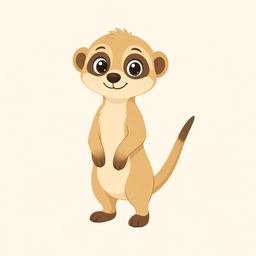

揀動物 → 搵線索 → 講發現！
聽老師宣布之後，點選老師指定俾你哋組嘅動物。
這三個搜尋結果，你覺得可唔可信？
先點資料站睇線索（當中可能有亂作內容，要分辨可靠與否），再把「特徵」和「適應」貼紙配對。
點一點來源，就會彈框開啟網頁／短片（唔會開新分頁）。留意：有一個「熱門轉載」可能唔可靠。
先點一張「特徵」貼紙，再點一張「適應」貼紙。
這張卡會幫你講出你們的發現。
喺呢度抽完，再口頭宣布俾學生；學生用「開始任務」自己揀老師指定嗰隻。